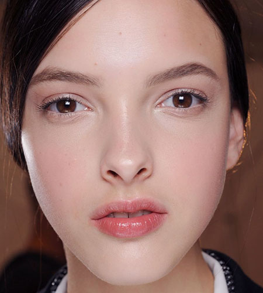

工具操作说明:
点击下方的菜单可以看到变形前后的图像。
在下方输入框输入变形配置数据， 然后点击应用改变， 可以得到改变之后的效果.
{ "type" : "forward", "start" : "10", "end" : "84", "intensity" : -0.6, "radius" : 0.8 }, { "type" : "forward", "start" : "22", "end" : "90", "intensity" : -0.6, "radius" : 0.8 }, { "type" : "forward", "start" : "16", "end" : "93", "intensity" : 0.5, "radius" : 1.5 }, { "type" : "bloatWrinkle", "target" : "104", "intensity" : -1.0, "radius" : 0.7 }, { "type" : "bloatWrinkle", "target" : "105", "intensity" : -1.0, "radius" : 0.7 }
